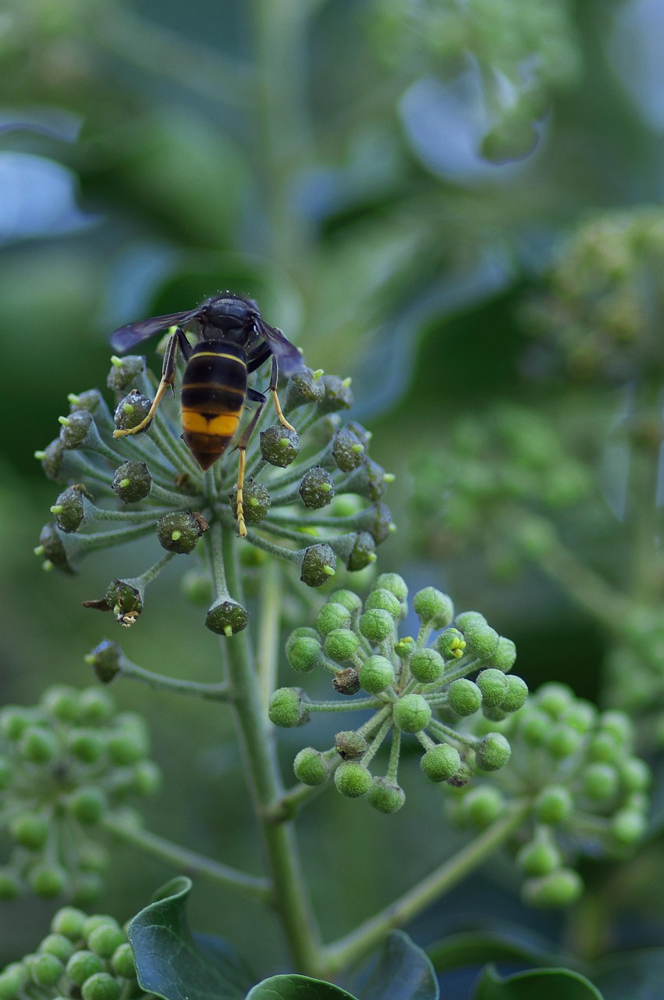
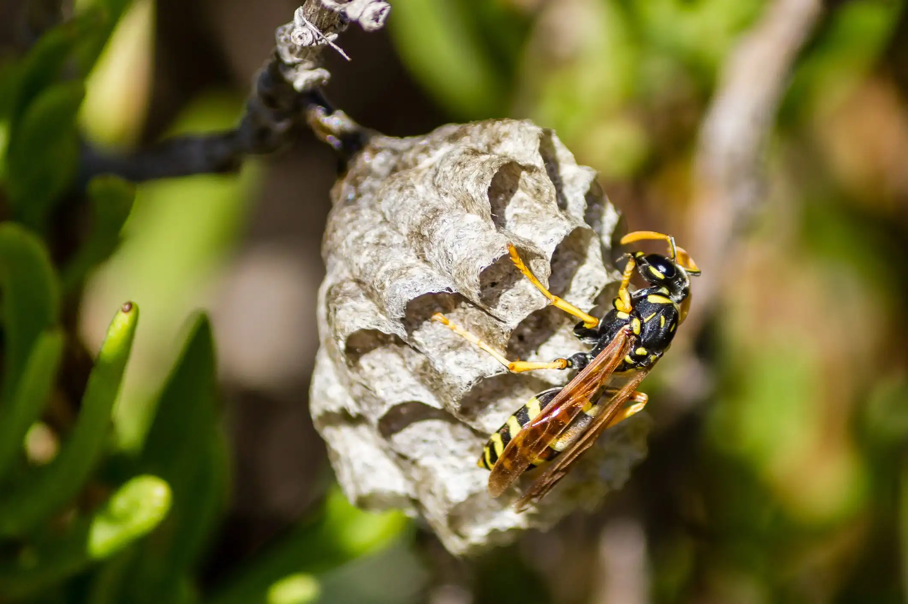

Identification de l'espèce · Vespa velutina

Cet outil est destiné à signaler exclusivement le frelon asiatique (Vespa velutina), espèce exotique envahissante régulée par l'arrêté ministériel du 26 décembre 2012.
Le frelon européen (Vespa crabro), la guêpe commune, l'abeille domestique et l'abeille noire ne sont pas concernés par ce dispositif et sont, pour la plupart, des espèces utiles voire protégées qu'il convient de préserver.
Les informations affichées sur cette plateforme constituent un outil interne de cartographie à usage des agents de la CCOLC. Elles ne se substituent pas à l'avis d'un professionnel et n'autorisent en aucun cas l'intervention directe sur un nid. Toute destruction doit être confiée à un opérateur agréé.
